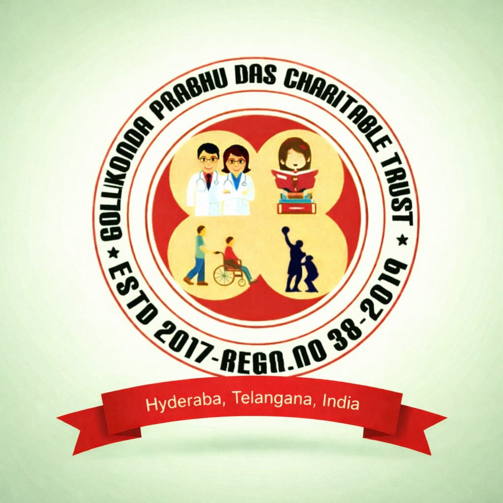
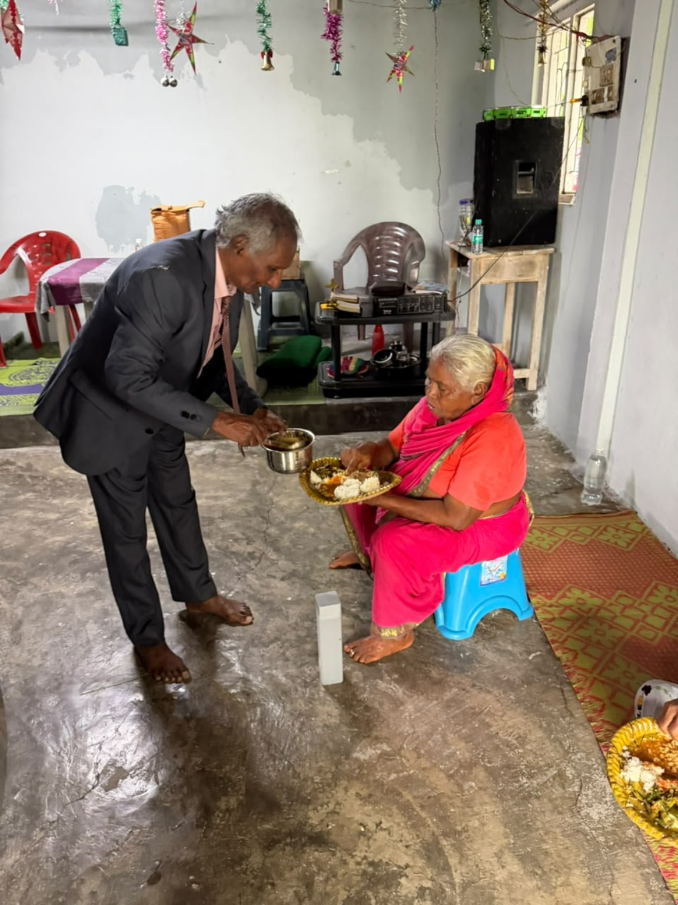
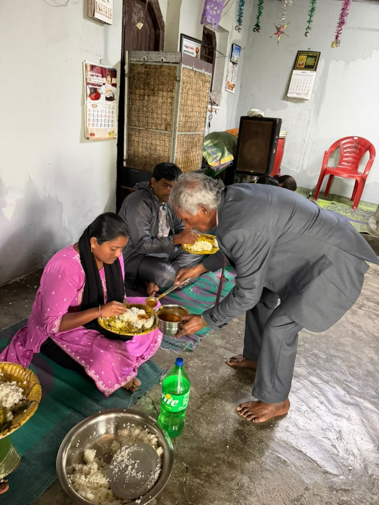
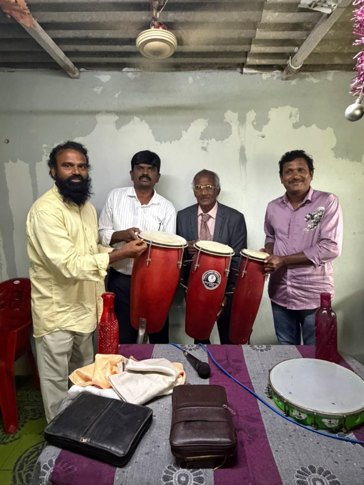
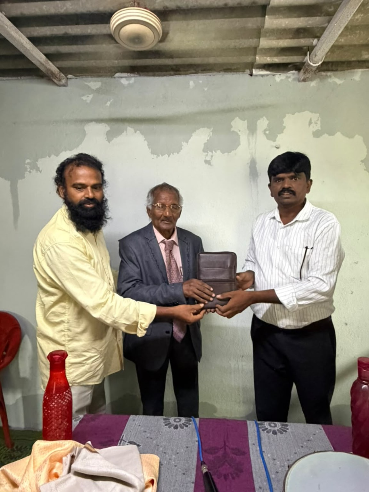
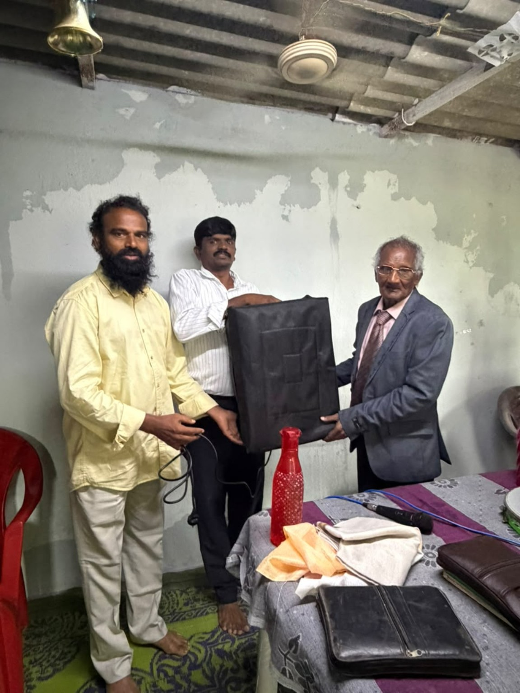
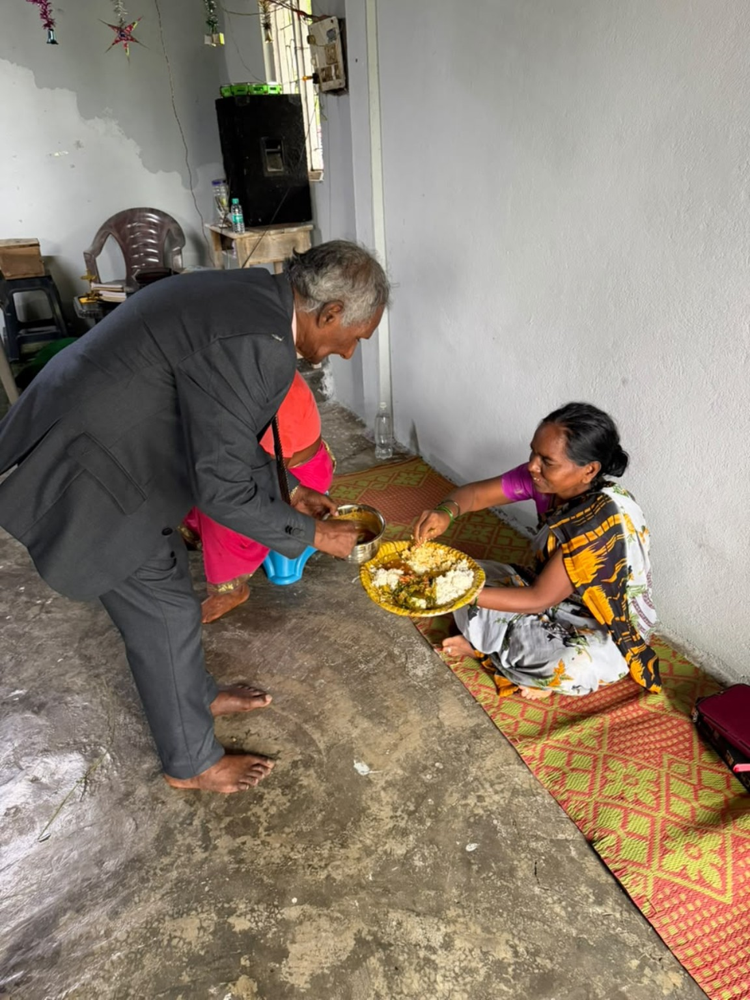
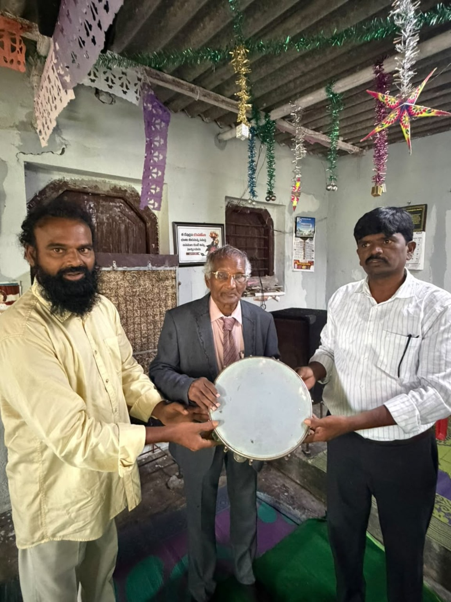
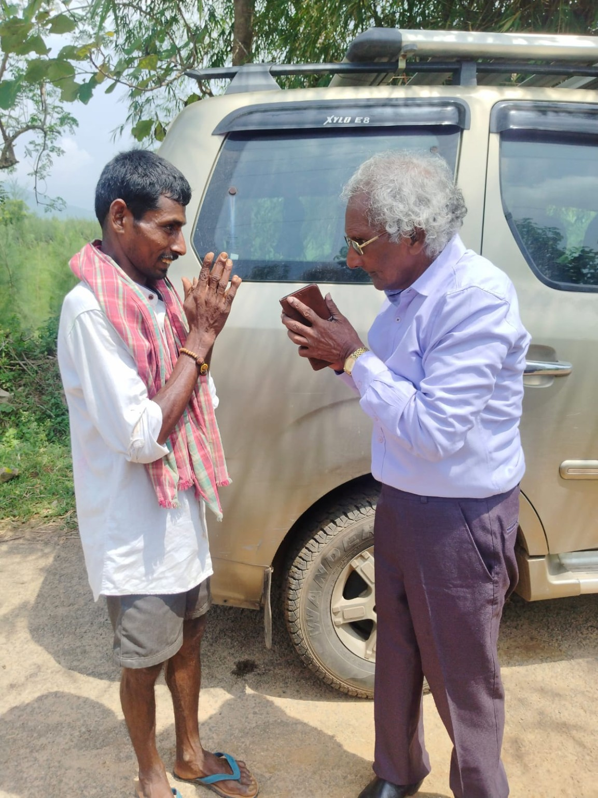
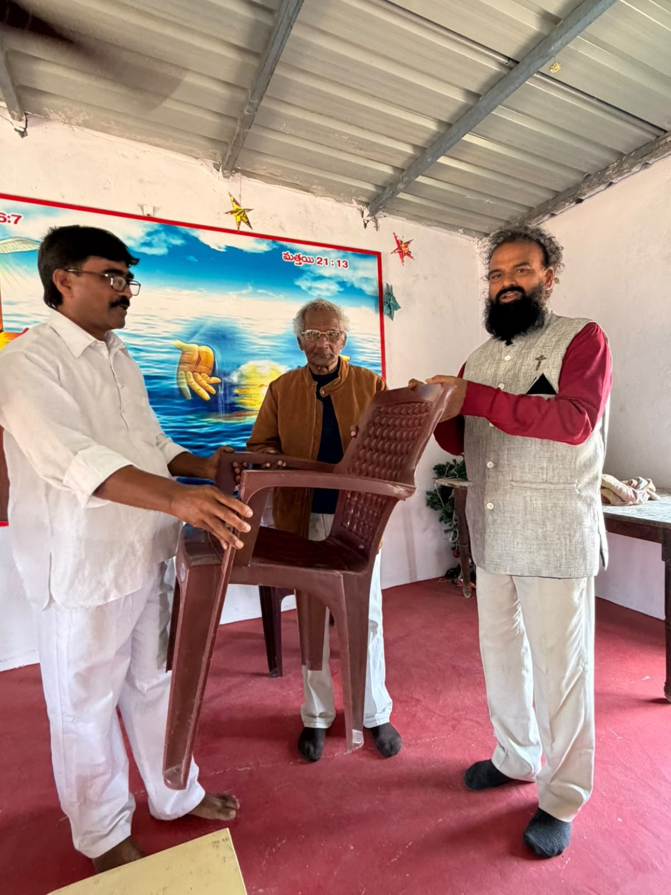

Food & essentials
Sharing meals and practical essentials with people experiencing hardship.

Prabhu Das GolcondaCharitable TrustA MESSAGE OF FAITH AND SERVICE
Serving our community through practical kindness, generosity and a commitment to treat every person with dignity.

The Prabhu Das Golconda Charitable Trust reflects a simple belief: care becomes meaningful when it reaches people in practical ways.
Through sharing food and useful essentials, supporting pastors and churches when resources allow, and building personal connections, the trust seeks to offer encouragement and help with respect and compassion.
Meet the founder ↗Service can take many forms. We focus on practical care, fellowship and support for the community.
Sharing meals and practical essentials with people experiencing hardship.
Supporting Christian pastors, churches and community activities when resources allow.
Offering items intended for everyday, household or church-related use.
Making time for visits, fellowship, encouragement and respectful conversation.
A journey of work, experience and personal commitment to helping others.
Prabhu Das Golconda was born on 8 May 1949 in Hyderabad, in the Rajendra Nagar area. He attended Methodist Boys’ High School and participated in sports in his younger years.
His professional journey included work connected with a Rockefeller Foundation rice project, ICRISAT and the Nuclear Fuel Complex, where he served as an assistant scientist. He also worked in Saudi Arabia as a hydraulic technician before retiring from the Nuclear Fuel Complex.
In 2017, he established the charitable work associated with this trust. The story shared here is one of personal commitment to practical acts of care.
“Whatever you do, work at it with all your heart, as working for the Lord.”COLOSSIANS 3:23
Moments of service, fellowship and practical support in our community.








Act justly, love mercy and walk humbly with your God.
MICAH 6:8For questions about the trust and its charitable activities, please reach out using the contact options below.
DONATION INFORMATION
Your support can help sustain charitable activities such as food assistance, useful essential items, and support for Christian pastors, churches and community activities. Please verify beneficiary details carefully before transferring funds.
Please contact the trust to confirm current donation procedures and receipt requirements. No tax exemption, registration status or permission for foreign contributions is claimed here.